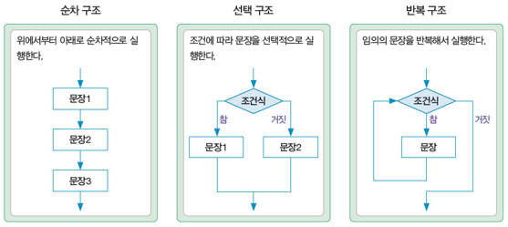
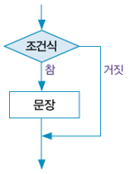
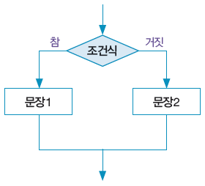
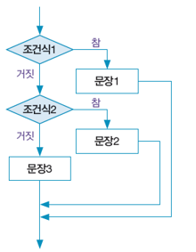

# 변수에 값을 저장하고 출력
age = 20
print(age)20=
= 기호 오른쪽의 값을 = 기호 왼쪽의 변수에 저장한다는 의미_이어야 하고, 나머지 글자는 문자, 숫자, _이어야 함['False', 'None', 'True', 'and', 'as', 'assert', 'async', 'await', 'break', 'class', 'continue', 'def', 'del', 'elif', 'else', 'except', 'finally', 'for', 'from', 'global', 'if', 'import', 'in', 'is', 'lambda', 'nonlocal', 'not', 'or', 'pass', 'raise', 'return', 'try', 'while', 'with', 'yield']type() 함수를 이용하여 자료형을 확인할 수 있음# 정수형
a = 20 # 10진수
b = 0o34 # 8진수
c = 0xA1 # 16진수
d = 0b1110 # 2진수
print(a, b, c, d)
print(type(a))20 28 161 14
<class 'int'>input() 함수를 이용함input() 함수는 안내문을 출력한 후 사용자의 입력을 기다리며, 입력한 데이터를 문자열 형식으로 반환함int(), float() 함수를 이용하여 자료형 변환을 해야 함변수 = input(안내문)print() 함수를 이용함,로 구분한 값을 나열하면 됨# print() 함수가 여러 개일 때 다음 줄로 넘어가는 대신 공백이 출력되기를 원하면 end 매개변수를 공백으로 설정함
a = 25
b = 42
print(a, end=' ')
print(b)25 42{} 안에 변수명을 직접 작성하여 출력하는 방식# f-string 출력 형식 지정
# 변수 이름 옆에 :을 작성한 다음 형식을 지정함
name = "홍길동"
age = 20
print(f"{name:5}, {age:3}")
a = 4
b = 3.14159265
print(f"20{a:02d}") # a 값을 두자리로 출력하되 앞의 빈곳은 0으로 채움
print(f"{b:.3f}") # b 값을 소수점 이하 세자리로 반올림하여 출력홍길동 , 20
2004
3.142| 연산자 | 설명 | 예시 | 결과 |
|---|---|---|---|
| + | 더하기 | print(6+4) | 10 |
| - | 빼기 | print(6-4) | 2 |
| * | 곱하기 | print(6*4) | 24 |
| / | 나누기 | print(6/4) | 1.5 |
| // | 나눈 정수 몫 | print(6//4) | 1 |
| % | 나눈 나머지 | print(6%4) | 2 |
| ** | 거듭제곱 | print(6**4) | 1296 |
| 연산자 | 설명 | 예시 | 결과 |
|---|---|---|---|
| == | 같다 | print(10==20) | False |
| != | 같지 않다 | print(10!=20) | True |
| > | 크다 | print(10>20) | False |
| < | 작다 | print(10<20) | True |
| >= | 크거나 같다 | print(10>=20) | False |
| <= | 작거나 같다 | print(10<=20) | True |
| 연산자 | 설명 | 예시 | 결과 |
|---|---|---|---|
| and | 왼쪽 식과 오른쪽 식 모두 참인 경우에만 True | a=25 print(a>8 and a<60) |
True |
| or | 왼쪽 식과 오른쪽 식 중 하나라도 참인 경우에만 True | a=70 print(a<8 or a>=60) |
True |
| not | 오른쪽 식이 참이면 False, 거짓이면 True | a=20 print(not a==20) |
False |
| 연산자 | 설명 | 예시 | 결과 |
|---|---|---|---|
| += | 왼쪽 값에 오른쪽 값을 더한 결과를 다시 왼쪽에 대입 | a, b = 2, 3 a += b print(a) |
5 |
| -= | 왼쪽 값에 오른쪽 값을 뺀 결과를 다시 왼쪽에 대입 | a, b = 2, 3 a -= b print(a) |
-1 |
| *= | 왼쪽 값에 오른쪽 값을 곱한 결과를 다시 왼쪽에 대입 | a, b = 2, 3 a *= b print(a) |
6 |
| /= | 왼쪽 값에 오른쪽 값을 나눈 결과를 다시 왼쪽에 대입 | a, b = 3, 2 a /= b print(a) |
1.5 |
| //= | 왼쪽 값에 오른쪽 값을 나눈 몫을 다시 왼쪽에 대입 | a, b = 7, 3 a //= b print(a) |
2 |
| %= | 왼쪽 값에 오른쪽 값을 나눈 나머지를 다시 왼쪽에 대입 | a, b = 7, 3 a %= b print(a) |
1 |
()를 사용함| 우선순위 | 연산자 | 설명 |
|---|---|---|
| 1 | ** | 거듭제곱 연산자 |
| 2 | +, - | 양수, 음수를 나타내는 단항 연산자 |
| 3 | *, /, //, % | 곱셈, 나눗셈, 나눈 몫, 나머지 |
| 4 | +, - | 덧셈, 뺄셈 |
| 5 | <, <=, >, >= | 비교 연산자 |
| 6 | ==, != | 동등 연산자 |
| 7 | =, +=, -=, /=, //=, %=, **= | 대입 연산자 |
| 8 | not | 논리 연산자 |
| 9 | and | 논리 연산자 |
| 10 | or | 논리 연산자 |

if 조건식:
문장
:이 위치하고, 참인 경우 실행될 문장은 반드시 들여쓰기(indentation)해야 함
# 무작위로 1~100 사이의 두 정수를 생성한 후, 큰 수부터 작은 수 순으로 출력
import random
a = random.randint(1, 100)
b = random.randint(1, 100)
if a<b:
a, b = b, a
print(a, b)3 2if 조건식:
문장1
else:
문장2
:이 위치하고, else 오른쪽에는 조건식 없이 :이 위치함
# 무작위로 1~100 사이의 정수를 생성한 후, 짝수인지 홀수인지 판단
import random
a = random.randint(1, 100)
if a % 2 == 0:
print(f'{a}는 짝수입니다')
else:
print(f'{a}는 홀수입니다')79는 홀수입니다if 조건식1:
문장1
elif 조건식2:
문장2
else:
문장3
:이 위치하고, 문장1, 문장2, 문장3은 반드시 들여쓰기해야 함
# 놀이공원 기본 입장료는 5,000원임
# 8세 미만은 기본 입장료 30% 할인, 65세 이상은 기본 입장료 20% 할인 적용함
# 연령이 주어졌을 때, 놀이공원 입장료 산출
fee = 5000
age = 7
if age < 8:
print('입장료:', fee*0.7)
elif age < 65:
print('입장료:', fee)
else:
print('입장료:', fee*0.8)입장료: 3500.0for 반복변수 in 반복범위:
문장
:이 위치하고, 반복해서 실행할 문장은 반드시 들여쓰기해야 함range() 함수로 만들 수 있음| 형식 | 설명 | 예시 | 결과 |
|---|---|---|---|
| range(종료값) | 0으로 시작해서 1씩 증가하며 종료값 전까지의 정수를 생성 | range(5) | 0,1,2,3,4 |
| range(시작값, 종료값) | 시작값으로 시작해서 1씩 증가하며 종료값 전까지의 정수를 생성 | rang(2,7) | 2,3,4,5,6 |
| range(시작값, 종료값, 증가값) | 시작값으로 시작해서 증가값만큼 증가시키면서 종료값 전까지의 정수를 생성 | range(2,11,3) | 2,5,8 |
while 조건식:
문장
def 함수명(매개변수1, 매개변수2, …):
문장
return 반환값
함수 호출 전입니다
함수입니다.
함수 호출 후입니다